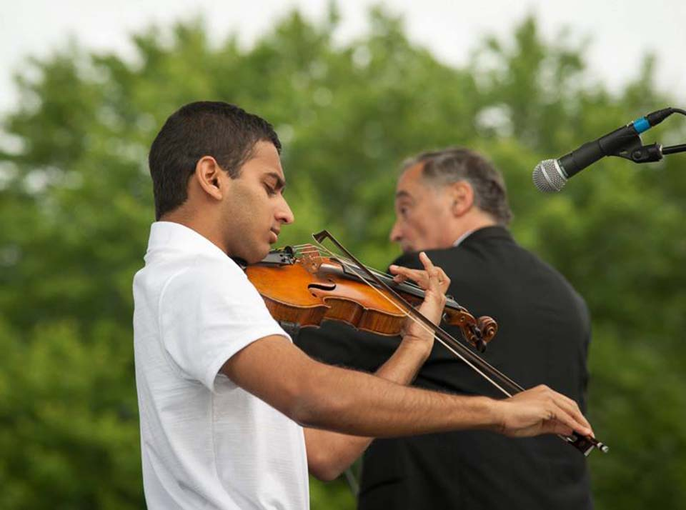

- 
West Virginia Youth Symphony
Providing opportunity for individual growth of musically talented and motivated youth.
Join our symphony!
Learn more about our program and get involved.
Who Are We?
The West Virginia Youth Symphony is a non-profit youth arts organization that supports four music ensembles that meet for rehearsal weekly and perform regularly throughout an academic year program. Currently, 126 students from 11 West Virginia counties, and 36 different schools are enrolled in the program. Of those students, approximately 40 students participate in an optional chamber ensemble program learning unique repertoire for smaller ensemble learning and performing. Professional musicians from the West Virginia Symphony Orchestra and community are the conductors and coaches for the program. Master classes, field trips, run-out concerts and other special events may be included as funding permits. It is a fun and social musical learning adventure ~ with some of the most talented students and musicians from across the region participating! Students are presented challenging music to encourage musical growth and to provide a stimulating learning experience.
Subscribe to our email list
Email Address*